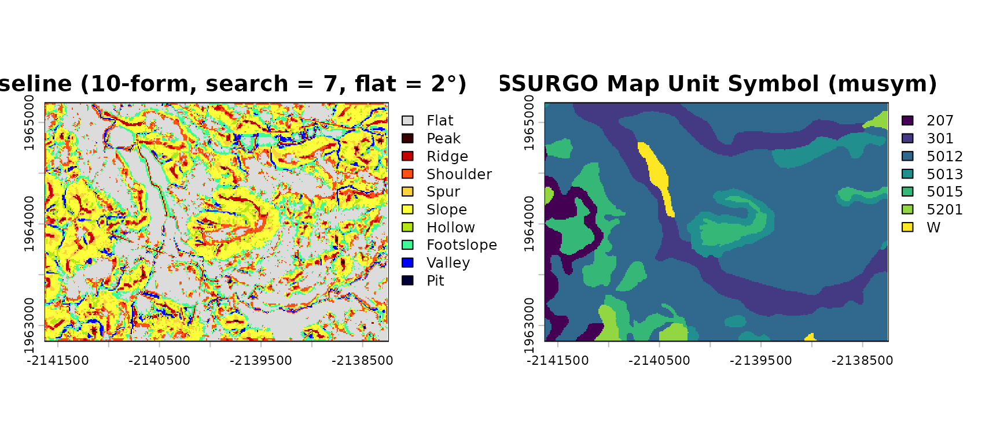
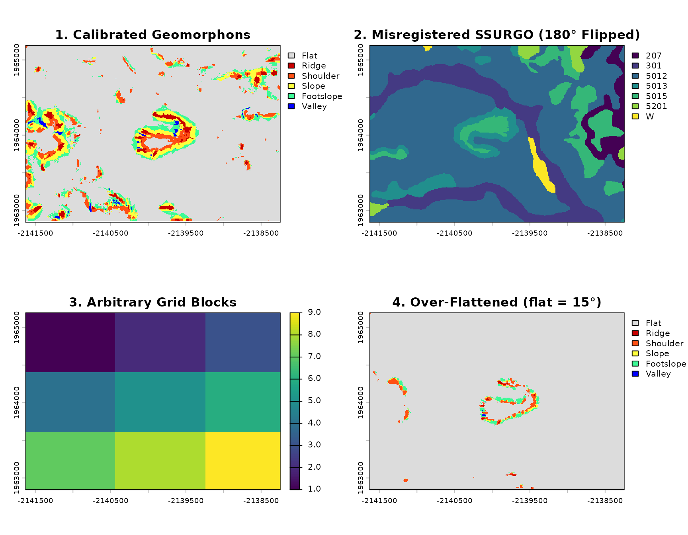

Structural Concordance and Parameter Calibration with 'rgeomorphon'
Source:vignettes/concordance-and-calibration.Rmd
concordance-and-calibration.RmdGeomorphon classifications depend on four choices:
search radius, skip distance,
flat_angle_deg, and landform taxonomy
(forms10, forms6, forms5,
forms4). When you have an external categorical map such as
a soil survey, rgeomorphon provides a supervised workflow
to measure agreement and tune parameters:
- Derive aligned categorical target layers from a raster attribute
table with
geomorphon_targets(). - Score areal and boundary agreement against a reference map with
geomorphon_concordance(). - Sweep parameter grids with
geomorphon_sweep(), evaluate every run withgeomorphon_calibrate(), and select non-dominated tradeoffs withgeomorphon_pareto(). - Inspect which landform classes and reference units separate or
overlap with
geomorphon_profile_dist().
This vignette runs the full workflow on the scorpion
dataset.
1. The scorpion Dataset
The scorpion dataset holds a 10 m Digital Elevation
Model (aggregated from USGS 3DEP 1 m LiDAR) and co-registered SSURGO
soil map unit keys (mukey) for an erosional remnant in
Calaveras County, California (EPSG:5070). See
data-raw/scorpion.R for the preparation script.
Load scorpion and attach the SSURGO mapunit
attribute table to the soil raster:
data("scorpion", package = "rgeomorphon")
dem <- terra::rast(scorpion$dem)
terra::crs(dem) <- attr(scorpion, "crs")
terra::ext(dem) <- attr(scorpion, "extent")
names(dem) <- "Elevation (m)"
soil <- terra::rast(scorpion$mukey)
terra::crs(soil) <- attr(scorpion, "crs")
terra::ext(soil) <- attr(scorpion, "extent")
levels(soil) <- scorpion$mapunit
scorpion$mapunit[, c("mukey", "musym", "muname", "slopegraddcp")]## mukey musym muname
## 1 2462630 W Water
## 2 2600529 5013 Miltonhills-Amador complex, 15 to 45 percent slopes
## 3 2766836 5201 Pardee-Amador complex, 1 to 15 percent slopes
## 4 2766838 5012 Amador sandy loam, 2 to 15 percent slopes
## 5 2766850 5015 Ospital-Jennylind complex, 2 to 15 percent slopes
## 6 2924880 207 Pentz sandy loam, 15 to 50 percent slopes
## 7 2924908 301 Archerdale-Hicksville association, 0 to 2 percent slopes
## slopegraddcp
## 1 0
## 2 40
## 3 4
## 4 7
## 5 2
## 6 33
## 7 12. Deriving Reference Targets (geomorphon_targets)
A soil map unit raster often carries multiple thematic attributes in
its attribute table. geomorphon_targets() turns selected
columns into aligned categorical SpatRaster layers and bins
numeric columns when breaks are given.
Here we build two targets: musym (7 map unit symbols)
and slopegraddcp (3 slope classes: 0-2%,
2-15%, and 15-50%):
targets <- geomorphon_targets(
soil,
vars = c("musym", "slopegraddcp"),
breaks = list(slopegraddcp = c(-Inf, 2, 15, Inf)),
labels = list(slopegraddcp = c("0-2%", "2-15%", "15-50%"))
)
attr(targets, "coverage")## target n_total n_valid n_na prop_valid n_classes
## 1 musym 79665 79430 235 0.9970501 7
## 2 slopegraddcp 79665 79430 235 0.9970501 3The coverage attribute reports valid cell counts,
NA counts, and class counts for each derived layer.
3. Structural Concordance (geomorphon_concordance)
geomorphon_concordance() compares a geomorphon raster
against a categorical reference raster from three angles:
-
Areal association (
method = "nmi"): Normalized Mutual Information (nmi, in ), plus its directional componentshomogeneity() andcompleteness(). -
Boundary alignment
(
method = "boundary"): Legacy one-way metrics (edge_offset,edge_concordance) and symmetric metrics (edge_f1,edge_mhd,edge_chamfer). Symmetric scores detect 8-neighbor edges inside the shared non-NAdomain and penalize unmatched boundaries in either map. Distances use projected CRS units (here meters). -
Toroidal spatial-null contrasts
(
spatial_null = TRUE): Up to 128 circular translations of the reference raster produce null means (mean_null_nmi,mean_null_edge_f1) and observed-minus-null deltas (delta_nmi,delta_edge_f1).
Start with a baseline 10-form run (search = 7,
skip = 0, flat_angle_deg = 2):
g_base <- geomorphons(dem, search = 7, skip = 0, flat_angle_deg = 2)
conc_base <- geomorphon_concordance(g_base, targets[["musym"]], threshold_cells = 2)
data.frame(
nmi = round(conc_base$nmi, 4),
delta_nmi = round(conc_base$delta_nmi, 4),
edge_concordance = round(conc_base$edge_concordance, 4),
edge_f1 = round(conc_base$edge_f1, 4),
delta_edge_f1 = round(conc_base$delta_edge_f1, 4),
edge_mhd_m = round(conc_base$edge_mhd, 2),
edge_ratio = round(conc_base$n_edges_geo / conc_base$n_edges_cat, 2)
)## nmi delta_nmi edge_concordance edge_f1 delta_edge_f1 edge_mhd_m edge_ratio
## 1 0.0769 0.0704 0.9491 0.475 0.0139 69.75 5.87
par(mfrow = c(1, 2))
terra::plot(g_base, main = "Baseline (10-form, search = 7, flat = 2°)")
terra::plot(targets[["musym"]], main = "SSURGO Map Unit Symbol (musym)")
Notice the trap in the one-way metric: edge_concordance
is near 0.95, yet edge_ratio is
5.87. Nearly three-quarters of interior cells are
geomorphon edges, so almost any soil boundary lands within 2 cells of a
landform edge by chance. Symmetric edge_f1
(0.475) barely beats its spatial-null mean
(delta_edge_f1 = +0.014), and nmi is low
(0.077).
4. Parameter Sweep and Pareto Calibration
Instead of hand-tuning one run at a time, sweep a grid of
search, skip, and flat_angle_deg
across all four landform taxonomies in one call to
geomorphon_sweep(). Each parameter tuple runs the
ray-tracing pass once and reclassifies into forms10,
forms6, forms5, and forms4.
Then score every configuration against both targets with
geomorphon_calibrate(). Set
spatial_null = FALSE during the broad sweep to keep runtime
short, then run spatial_null = TRUE on the top Pareto
candidates.
grid <- data.frame(
search = c(5, 5, 10, 10, 10, 15, 15, 15, 25),
skip = c(0, 0, 0, 2, 2, 0, 2, 2, 4),
flat_angle_deg = c(2, 5, 2, 5, 8, 2, 5, 8, 5)
)
sw <- geomorphon_sweep(
dem,
param_grid = grid,
forms = c("forms10", "forms6", "forms5", "forms4")
)
cal <- geomorphon_calibrate(
sw,
targets = targets,
threshold_cells = 2,
spatial_null = FALSE
)
nrow(cal)## [1] 72Use geomorphon_pareto() to find non-dominated
configurations that maximize nmi and edge_f1
while minimizing edge_mhd. Adding
min_edge_ratio = 0.5 and max_edge_ratio = 2.0
drops over-fragmented maps whose edge density is far higher than the
soil polygons:
pf_musym <- geomorphon_pareto(
cal[cal$target == "musym", ],
min_edge_ratio = 0.5,
max_edge_ratio = 2.0
)
cols <- c(
"search", "skip", "flat_angle_deg", "forms",
"nmi", "edge_f1", "edge_mhd", "edge_ratio", "pareto_score"
)
pf_top <- pf_musym[which(pf_musym$is_pareto), cols]
pf_top <- pf_top[order(-pf_top$pareto_score), ]
pf_top[, 5:9] <- round(pf_top[, 5:9], 4)
pf_top## search skip flat_angle_deg forms nmi edge_f1 edge_mhd edge_ratio
## 27 10 2 5 forms6 0.2071 0.6066 55.9263 1.5553
## 25 10 2 5 forms10 0.2078 0.6044 55.8989 1.6192
## 51 15 2 5 forms6 0.2107 0.5964 55.3264 1.5753
## 49 15 2 5 forms10 0.2111 0.5951 55.2516 1.6504
## 15 5 0 5 forms4 0.1524 0.6306 41.9878 1.9998
## pareto_score
## 27 0.8652
## 25 0.8629
## 51 0.8554
## 49 0.8536
## 15 0.0000Check the top Pareto configuration with
spatial_null = TRUE to verify that its agreement exceeds
random translation:
best <- pf_top[1, ]
g_best <- geomorphons(
dem,
search = best$search,
skip = best$skip,
flat_angle_deg = best$flat_angle_deg,
forms = best$forms
)
conc_best <- geomorphon_concordance(
g_best,
targets[["musym"]],
threshold_cells = 2,
spatial_null = TRUE
)
data.frame(
nmi = round(conc_best$nmi, 4),
delta_nmi = round(conc_best$delta_nmi, 4),
edge_f1 = round(conc_best$edge_f1, 4),
delta_edge_f1 = round(conc_best$delta_edge_f1, 4),
edge_mhd_m = round(conc_best$edge_mhd, 2),
edge_ratio = round(conc_best$n_edges_geo / conc_best$n_edges_cat, 2)
)## nmi delta_nmi edge_f1 delta_edge_f1 edge_mhd_m edge_ratio
## 1 0.2071 0.1951 0.6066 0.2989 55.93 1.56Compared to the baseline 10-form run, generalizing to the calibrated
forms6 parameters (search = 10,
skip = 2, flat_angle_deg = 5) cuts
edge_ratio from 5.87 to 1.56,
nearly triples nmi to 0.207, and raises
delta_edge_f1 from +0.014 to
+0.299.
5. Diagnosing Class Separation
(geomorphon_profile_dist)
geomorphon_profile_dist() computes pairwise base-2
Jensen-Shannon divergence (JSD, bounded in
)
between conditional profiles of a contingency table:
-
margin = 1: compares landform classes by their soil map unit distributions. -
margin = 2: compares soil map units by their landform distributions.
ct <- conc_best$contingency_table
geo_cats <- geomorphon_categories()
rownames(ct) <- geo_cats$form[match(as.integer(rownames(ct)), geo_cats$value)]
musym_levels <- terra::cats(targets[["musym"]])[[1]]
colnames(ct) <- musym_levels$category[match(as.integer(colnames(ct)), musym_levels$id)]
# Soil map unit similarity across landforms (0 = identical, 1 = disjoint)
round(geomorphon_profile_dist(ct, margin = 2), 3)## 207 301 5012 5013 5015 5201 W
## 207 0.000 0.648 0.555 0.016 0.301 0.324 0.645
## 301 0.648 0.000 0.012 0.532 0.175 0.123 0.002
## 5012 0.555 0.012 0.000 0.449 0.125 0.078 0.013
## 5013 0.016 0.532 0.449 0.000 0.252 0.257 0.529
## 5015 0.301 0.175 0.125 0.252 0.000 0.010 0.180
## 5201 0.324 0.123 0.078 0.257 0.010 0.000 0.126
## W 0.645 0.002 0.013 0.529 0.180 0.126 0.000The JSD matrix cleanly recovers the three geomorphic groups on
scorpion:
- Steep remnant side slopes (
207,5013) have near-zero divergence (0.016). - Water and level alluvial plains (
W,301) have near-zero divergence (0.002). - Undulating hillslope complexes (
5015,5201) cluster together (0.010). - Steep vs. level units (
207vs.301) separate sharply (0.648).
6. Negative Controls: When Concordance Breaks Down
To see how concordance metrics behave under failure, compare the
calibrated g_best classification against three negative
controls on the same grid:
-
Misregistered soil map (
soil_flipped): Rotatingmusym180 degrees keeps identical polygon geometry and edge count but breaks spatial alignment. -
Rectilinear grid blocks (
grid_blocks): Arbitrary blocks that ignore terrain. -
Over-flattened geomorphons
(
flat_angle_deg = 15°): Collapses gentle and moderate hillslopes intoflat.
musym_r <- targets[["musym"]]
soil_flipped <- terra::flip(terra::flip(musym_r, "horizontal"), "vertical")
grid_blocks <- musym_r
rc <- terra::rowFromCell(grid_blocks, seq_len(terra::ncell(grid_blocks)))
cc <- terra::colFromCell(grid_blocks, seq_len(terra::ncell(grid_blocks)))
terra::values(grid_blocks) <- (rc %/% 80L) * 3L + (cc %/% 120L) + 1L
g_overflat <- geomorphons(
dem,
search = best$search,
skip = best$skip,
flat_angle_deg = 15,
forms = best$forms
)
scenarios <- list(
"1. Calibrated Reference" = geomorphon_concordance(g_best, musym_r),
"2. Misregistered (180° Flipped)" = geomorphon_concordance(g_best, soil_flipped),
"3. Arbitrary Grid Blocks" = geomorphon_concordance(g_best, grid_blocks),
"4. Over-Flattened (flat = 15°)" = geomorphon_concordance(g_overflat, musym_r)
)
do.call(rbind, lapply(names(scenarios), function(nm) {
res <- scenarios[[nm]]
data.frame(
Scenario = nm,
nmi = round(res$nmi, 4),
delta_nmi = round(res$delta_nmi, 4),
edge_f1 = round(res$edge_f1, 4),
delta_edge_f1 = round(res$delta_edge_f1, 4),
edge_mhd_m = round(res$edge_mhd, 2),
n_edges_geo = res$n_edges_geo,
stringsAsFactors = FALSE
)
}))## Scenario nmi delta_nmi edge_f1 delta_edge_f1
## 1 1. Calibrated Reference 0.2071 0.1951 0.6066 0.2989
## 2 2. Misregistered (180° Flipped) 0.0095 -0.0028 0.3321 0.0230
## 3 3. Arbitrary Grid Blocks 0.0486 0.0261 0.0738 -0.1045
## 4 4. Over-Flattened (flat = 15°) 0.0689 0.0609 0.2695 0.1733
## edge_mhd_m n_edges_geo
## 1 55.93 15447
## 2 81.99 15447
## 3 254.70 15447
## 4 384.79 2750
par(mfrow = c(2, 2))
terra::plot(g_best, main = "1. Calibrated Geomorphons")
terra::plot(soil_flipped, main = "2. Misregistered SSURGO (180° Flipped)")
terra::plot(grid_blocks, main = "3. Arbitrary Grid Blocks")
terra::plot(g_overflat, main = "4. Over-Flattened (flat = 15°)")
Each failure mode leaves a distinct signature:
-
Misregistration collapses
nmianddelta_nminear zero and dropsdelta_edge_f1to noise. -
Arbitrary grid blocks produce negative
delta_edge_f1(worse than random translation) and highedge_mhd. -
Over-flattening erases hillslope edges, driving
n_edges_geodown andedge_mhdup into the hundreds of meters.
Read the metrics together. No single number guarantees a good thematic match.
References
- Jasiewicz, J., & Stepinski, T. (2013). Geomorphons — a pattern recognition approach to classification and mapping of landforms. Geomorphology, 182, 147–156. https://doi.org/10.1016/j.geomorph.2012.11.005